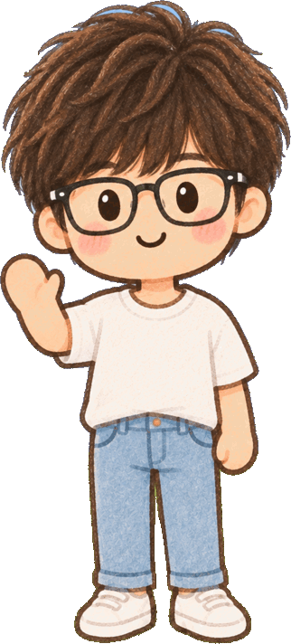

로블록스,재미있으면 다 괜찮을까?
사람 · 말 · 도움 요청
약속 3 · 사람구호 하나
지난 편 · 약속 1 시간 · 약속 2 돈
게임에서도, 메신저에서도 똑같이!


서영샘"나도 너랑 같은 학년이야!" 한다면요?
친절한 말만으로는 알 수 없어요
같은 학년인지, 화면 속 말과 모습만으로는 확실히 알기 어려워요
선물
"선물 줄 테니까 다른 앱에서 이야기하자"
비밀
"이건 부모님한테 비밀이야"
사진
"네 사진 보내 줘"
만남
"혼자 나와서 만나자"
사람을 의심하기보다, 무엇을 부탁하는지 살펴봐요
설명을 위해 만든 예시 · 참고: eSafety Commissioner 보호자·어린이 안내
3약속 3 · 사람
몸이 나온 사진·불편한 사진을 보내 달라고 하면
절대 보내지 않고, 바로 믿을 수 있는 어른에게
절대 보내지 않고, 바로 믿을 수 있는 어른에게
진짜 이름
학교 이름
집 주소
전화번호
비밀번호
나를 찾아낼 수 있는 정보는 알려 주지 않아요
얼마나 친한지보다, 무엇을 부탁하는지를 봐요약속 3

이미 답장했다면?
그래도 괜찮아요
지금 도움을 요청하면 돼요
속이거나 괴롭힌 건 그 사람의 잘못이에요
혼날까 봐 혼자 숨기지 않기

불편하면 나와도 돼요
너무 무서운 게임친구는 괜찮다고 해도
미워하라고 부추기는 게임사실을 비틀어 웃음거리로
"나는 이거 불편해. 나갈게."
멈추기차단신고어른에게
"괜찮아, 다시 해 보자.""그 말은 싫어. 그만해 줘.""나는 잠깐 쉴게."
참고: eSafety · Roblox Support · 전자신문(2026-03-20)
위험할 때 쓰는 구호
1
멈추고
더 답장하지 않기 · 사진·정보·돈 보내지 않기
2
알리고
"게임에서 불편한 일이 생겼어요. 같이 봐 주세요."
3
함께 해결하기
어른과 함께 차단·신고 · 혼자 버티지 않기
지금 바로 위험하면
어른과 함께 112
어른과 함께 112
나를 지키는 일은 어린이 혼자의 책임이 아니에요 · 어른과 게임 회사도 지켜야 해요
10
잠깐 퀴즈 · 나라면?
모르는 사람이 말해요."아이템 줄게. 네 비밀번호 알려 줘."
①아이템을 받으려고 알려 주기
②알려 주지 않고, 멈추고, 보호자에게 알리기
③가짜 비밀번호를 알려 주기
멈추고, 알리고, 함께 신고해요
10
잠깐 퀴즈 · 나라면?
게임에서 자주 같이 논 사람이 말해요."우리 다른 앱에서 따로 얘기하자. 부모님한테는 비밀!"
①오래 놀았으니 다른 앱으로 옮기기
②부모님께는 비밀로 하기
③옮겨 가지 않고, 어른에게 보여 주기
'비밀'과 '다른 앱으로'는 위험 신호!
10
잠깐 퀴즈 · 나라면?
친구들이 다 하는 게임인데,나한테는 너무 무서워요.
①무서워도 끝까지 참고 하기
②"나는 다른 거 할래." 말하기
③몰래 혼자 더 해 보기
같아지려고 불편함까지 참을 필요는 없어요
게임할 때 나를 지키는 약속
약속 1 · 시간시작하기 전에
시작하기 전에
끝낼 때 정하기
약속 2 · 돈사기 전에 묻고
사기 전에 묻고
진짜 금액 확인
약속 3 · 사람친한 정도보다
친한 정도보다
무엇을 부탁하는지
멈추고 · 알리고 · 함께 해결하기
어른의 약속: "먼저 네 이야기를 듣고 같이 해결할게"
서영샘나와 친구를 소중하게 지켜요!